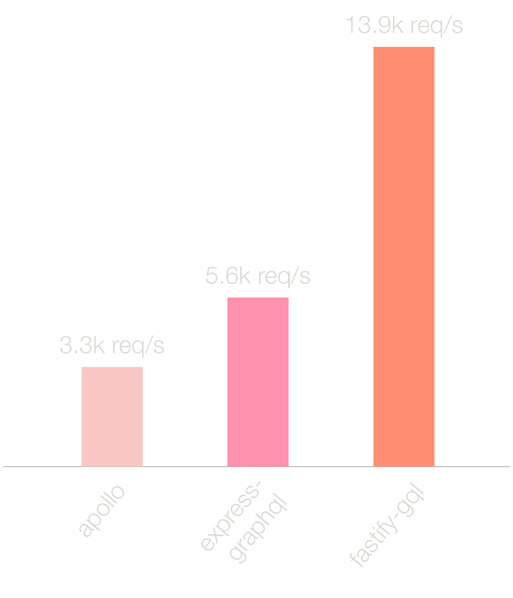

graphql-hooks
Workshop
@...
React Hooks are...
reusable stateful logic functions that do not obstruct the view hierarchy
- Store and manage local state
- Respond to component lifecycle events
- Better separation of concerns
- Function component approach
GraphQL is a data query language for API
Graph
QL
- Strongly typed query language is self-documenting
- Declarative language expressing data requirements
- Lighter and faster responses without roundtrips
- Single endpoint to do all the things
Introducing graphql-hooks!
graphql-hooks is a tiny hooks-first and super-fast GraphQL client
graphql-hooks
github.com/nearform/graphql-hookswww.npmjs.com/package/graphql-hooks
graphql-hooks-workshop
github.com/nearform/graphql-hooks-workshop
Setup
- Node v10.16.0
- clone github repository
git clone git@github.com:nearform/graphql-hooks-workshop.git
Part 1: Hello World
Goals
- Get a GraphQL Server up and running
- Explore GraphiQL
Stack
- Node.js
- Fastify
- React
- GraphQL
Hello World Setup
cd graphql-hooks-workshop/exercises/part-1-hello-world/npm installnpm run watch- http://localhost:3000
- Navigate to the List Users page
- This is just a skeleton
- It is not connected to GraphQL... yet
Look at
src/server/graphql.js
- fastify-gql module
- data
- schema
- resolvers
graphiql: true

graphiQL
graphiQL
is an in-browser IDE for exploring GraphQL
http://localhost:3000/graphiql.html
RUN THIS QUERY
{
users {
name
}
}
Part 2: GraphQL Schema
Goals
- Update the GraphQL schema to Create a User
- Test it with GraphiQL
GraphQL Schema Setup
cd graphql-hooks-workshop/exercises/part-2-schema/npm installnpm run watch- http://localhost:3000
Look at src/server/graphql.js
A GraphQL schema defines the relationships and structure of the data
In the current
schema
Query is the
entry point
that provides the type
User
const schema = `
type User {
name: String
}
type Query {
users: [User]
}
`
GraphQL resolvers are functions that define what to do with the data
In the current
resolver
Query defines what to do with the
schema
in this case, to fetch all of the
users
const resolvers = {
Query: {
users() {
return users
}
}
}
Generally, in Graph
QL
- Queries are for fetching
- Mutations are for writing
To Create a User,
add a mutation to the schema and resolvers in graphql.js
Modify src/server/graphql.js
const schema = `
type User {
name: String
}
type Query {
users: [User]
}
type Mutation {
createUser(name: String!): User
}
`
Modify src/server/graphql.js
const resolvers = {
Query: {
users() {
return users
}
},
Mutation: {
createUser: (_, user) => {
users.push(user)
return user
}
}
}
Test the new Create a User mutation
GraphiQL
http://localhost:3000/graphiql.html
RUN THIS QUERY
mutation CreateUser($name: String!){
createUser(name: $name) {
name
}
}
Don't forget to add
Query Variables
{
"name": "bob"
}
Test it
{
users {
name
}
}
Part 3: graphql-hooks
Goals
- See graphql-hooks in action
- Connect the back-end data to the front-end webpage
- Retrieve a list of users from an API using a graphql hook
graphql-hooks setup
cd graphql-hooks-workshop/exercises/part-3-graphql-hooks/npm installnpm run watch
Install graphql-hooks
npm install graphql-hooks
Modify src/client/js/app-shell.js
Create a GraphQL client
import { GraphQLClient } from 'graphql-hooks'
const client = new GraphQLClient({
url: '/graphql'
})
Wrap the app with provider
import {
GraphQLClient,
ClientContext
} from 'graphql-hooks'
const client = new GraphQLClient({
url: '/graphql',
})
const App = (
<ClientContext.Provider value={client}>
<AppShell />
</ClientContext.Provider>
)
Modify src/app/pages/ListUsers.js
Query GraphQL
import { useQuery } from 'graphql-hooks'
const LIST_USERS_QUERY = `
query ListUsersQuery {
users {
name
}
}
`
const { loading, error, data } = useQuery(QUERY)
Hook details
const {
loading, // Boolean, is it completed?
error, // Boolean, was it successful?
data, // JSON received from API
refetch, // Function to trigger refetch
cacheHit, // Data from the cache?
fetchError,
httpError,
graphQLErrors // Errors
} = useQuery(QUERY, {
variables: {}, // Does the query include variables?
useCache, // Boolean, OK to lookup the cache first?
skipCache // Boolean, tore the response in cache?
})
Next an exercise
Part 4: Query Variables
Goal
Implement page-based pagination
Step 1
Prepare backend resolver
const resolvers = {
Query: {
users: (_, { skip = 0, limit }) => {
const end = limit
? skip + limit
: undefined
return users.slice(skip, end)
}
}
}
Step 2
Tune the query
const USERS_QUERY = `
query UsersQuery($skip: Int, $limit: Int) {
users(skip: $skip, limit: $limit) {
name
}
}
`
Step 3
Execute the query
const { data } = useQuery(USERS_QUERY, {
variables: {
limit: 1,
skip: page - 1
}
})
An exercise
Let's implement pagination for users page
Part 5: Caching
Goal
Do not repeat the identical requests
refetch no more
graphql-hooks supports custom cache plug-ins
graphql-hooks-memcache
- document based
- creates a hash of the operation and its options
- stores it in a simple k/v store
- uses Least Recently Used policy
import memCache from 'graphql-hooks-memcache'
const client = new GraphQLClient({
url: '/graphql',
cache: memCache({
// For rehydration (mostly after SSR)
initialState,
// Expiration of cache item in milliseconds
ttl,
// Number of items to cache
size
})
})
An exercise
Add react-hooks-memcache to ListUsers
How to test it?
If we make a manual query and then unmount and mount the 'ListUsers' component, we can test that the cache is working
Part 6: Server Side Rendering
Goal
Speed up React app delivery
Server Side Rendering
- Reuse client side app to render on the backend
- Use the same graphql-hooks
- Serialize memcache and pass to the frontend
- Rehydrate cache object (initialState) on the frontend
Step 1
Supply fetch functionality
- Use isomorphic-unfetch
- Switches to node-fetch on backend
- Uses unfetch on frontend
Example
const client = new GraphQLClient({
url: 'http://127.0.0.1:3000/graphql',
fetch: require('isomorphic-unfetch'),
cache: memCache(),
logErrors: true
})
Step 2
Serialize initialState
- Use graphql-hooks-ssr
- Serialize on the backend
- Pass to the frontend
- Rehydrate at the frontend
Serialize initialState
import { getInitialState } from 'graphql-hooks-ssr'
const App = <ClientContext.Provider value={client}>
<AppShell />
</ClientContext.Provider>
const initialState = await getInitialState({
App, // React App
client // GraphQL client
})
Pass to the frontend
async function renderScripts({ initialState }) {
const appShellBundlePath = await getBundlePath('app-shell.js')
return `
<script type="text/javascript">
window.__INITIAL_STATE__=${JSON.stringify(initialState).replace(
/</g,
'\\u003c'
)};
</script>
<script src="${appShellBundlePath}"></script>
`
}
hydrate at the frontend
import memCache from 'graphql-hooks-memcache'
const initialState = window.__INITIAL_STATE__
const client = new GraphQLClient({
url: '/graphql',
cache: memCache({ initialState })
})
An exercise
Use SSR on ListUsers page
graphql-hooks are awesome!